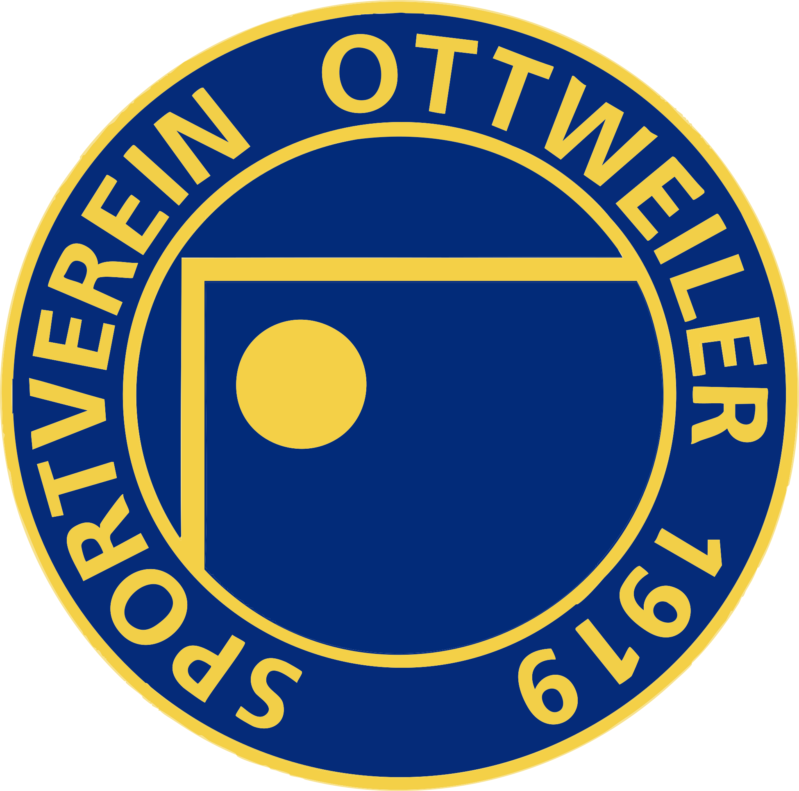

SV Ottweiler · Oktoberfest
Fotocontest
Lade dein schönstes Oktoberfest-Foto hoch und stimm für deine Favoriten ab.
1 Fotopro Handy
ab 21 UhrVoting startet
3 Stimmenpro Handy
24 UhrGewinner
-
QR-Code scannen Mit der Handy-Kamera den Code rechts scannen. Dann öffnet sich die Fotocontest-Seite.
-
Name eingeben Gib deinen richtigen Namen an, damit wir dich finden, falls du gewinnst.
-
Foto einreichen Frauen oder Männer wählen, Foto auswählen, der Veröffentlichung zustimmen und auf „Foto einreichen“ tippen.
-
Ab 21 Uhr abstimmen Tipp auf das ♥ unter deinen Lieblingsfotos. Du hast 3 Stimmen. Für dein eigenes Foto kannst du nicht stimmen. Noch einmal tippen zieht die Stimme zurück.
-
Um 24 Uhr: Siegerehrung Das Voting endet. Wir geben die Gewinner vor Ort bekannt und zeigen sie auf der Fotocontest-Seite.
- Pro Handy kann nur ein Foto im Contest sein. Wenn du ein anderes nehmen willst, entfernst du dein Foto und reichst ein neues ein. Die Stimmen für das alte Foto gehen dabei verloren.
- Die Erlaubnis, dein Foto auf Social Media zu zeigen, ist freiwillig und keine Bedingung für die Teilnahme.
- Mehr Fotos? In der Spaßgalerie auf derselben Seite kannst du beliebig viele Bilder teilen, dort wird nicht abgestimmt.